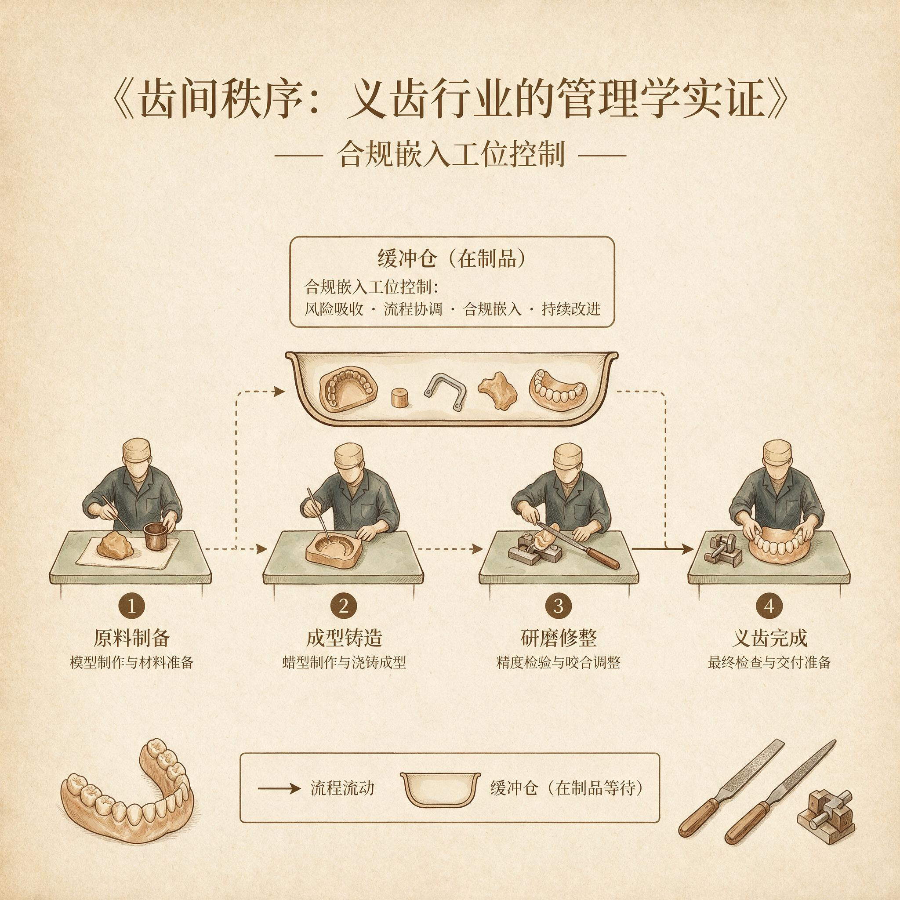

第 11 章
合规嵌入工位控制
合规记录与生产动作的分离，在义齿行业不是一个秘密，而是一种被普遍默许的常态。这种默许不是源于道德松懈，而是源于一个冷冰冰的事实：当合规被设计为交付流程末端的一道审查工序，记录就必然从“动作的痕迹”蜕变为“交付的门票”。门票只需要看起来有效，不需要真实。第3章论证过医疗合规与商业效率之间的互相挤压。那个挤压是结构性的，不会因为管理者的善意或监管的严厉而消失。
本章不重复论证挤压的存在，而是展示在挤压无法消除的条件下，合规如何被重新安置——从交付流程之后的外部闸门，转化为每个工位自带的、不可跳过的控制点。这个转化的起点是一个反直觉的判断：增加检查频次和检查项目，不能解决合规被跳过的问题。
真正有效的改变不是让检查变多，而是让检查变得不可分离。不可分离意味着合规动作与生产动作在时间与空间上共时发生。技师完成内冠喷砂时，喷砂动作本身就触发一次时间记录，而不是做完之后等文员来填写表单。
上瓷技师开始操作前，扫描工单条码的动作自动触发系统比对——氧化层暴露时间是否超限。超限则工位无法启动下一动作。记录不是事后的补充说明，而是生产动作的组成部分。
2017年，一家华东企业在引入数字化生产管理系统时做了这件事。他们在每个工位加装扫码枪，要求工单流转必须经过扫码确认。初始目的是提高生产进度追踪的准确性。但系统运行三个月后，管理层发现了一个他们没有预料到的副产品：扫码时间自动生成了每道工序的真实开始和结束时间。
当这些时间数据与同期的人工合规记录放在一起比对时，裂缝出现了。按照扫码记录，大量订单的氧化层暴露时间远超工艺规范要求的四十分钟上限。有些订单从喷砂到上瓷的间隔超过四个小时。而同期的人工合规记录显示一切正常——每一份记录都填写着小于四十分钟的时间间隔，每一份都有签名。
这个发现触发了管理层的激烈争论。一部分人认为，扫码记录暴露了现场管理的严重漏洞，应该加强稽核和处罚。
另一部分人认为，扫码记录本身可能不准确——技师可能在完成操作后忘记扫码，或者提前扫码，导致时间记录失真。还有一部分人提出一个更尖锐的问题：四十分钟的氧化层暴露时限本身是否合理。这个时限是在实验室条件下确定的——恒温恒湿、特定合金成分、标准化喷砂工艺。在实际生产环境中，环境湿度、合金批次差异、喷砂压力的微小波动都会影响氧化速度。一个统一的时间限制，可能过于僵化。
争论持续了将近两个月。最终推动变革的不是争论中的任何一方，而是企业最大的客户——一家连锁口腔医疗机构。这家机构在年度供应商审核中提出了一个要求，措辞直接：所有修复体必须提供可追溯的工序时间记录，这些记录必须与生产系统的电子日志一致，不接受人工补录。客户不关心四十分钟是否合理，也不关心技师是否忘记扫码。
客户只关心一件事：如果修复体在临床使用中出现问题，能否通过记录追溯到真实的工艺偏差。如果记录本身不可靠，追溯就是一句空话。这个外部要求打破了内部争论的僵局。
企业的应对方案后来成为行业内一个被广泛参考的案例。方案的核心不是增加检查，而是重新设计工位上的操作规则。
以金属内冠氧化层控制为例，新规则包含三个环节。第一，喷砂完成时，技师必须立即扫码确认，系统自动记录时间戳。第二，上瓷工位接收工件时，必须再次扫码，系统自动计算氧化层暴露时间。第三，如果暴露时间超过设定阈值，系统拒绝进入下一工序，工件必须退回重新喷砂。退回动作本身也会触发一条记录，标注退回原因。
这三个环节的关键特征在于：它们不是额外的检查动作，而是工位正常操作的一部分。技师不需要额外填写表单，不需要记住时限，不需要判断是否超限。系统替他们完成了判断。他们只需要在正确的时点扫码。扫码这个动作和拿起工件、装夹、启动设备一样，是完成这道工序的必要步骤。
这套方案实施后的前三个月，返工率上升了大约十二个百分点。大量以前被人工记录“合规化”的超时工件，现在被系统拦截。部分技师的计件工资因此下降。最激烈的抵触来自那些经验超过十年的资深技师。
他们的逻辑直截了当：我干了十几年，从来没有人投诉我的内冠氧化层有问题。你现在用机器卡我，让我返工，这是不信任我的手艺。
这种抵触不是情绪问题。它触及了义齿行业的一个深层矛盾：匠人经验与标准化规则之间的权威冲突。
资深技师对氧化层的判断不是基于时间，而是基于颜色。内冠表面在喷砂后会逐渐从银白色变为浅灰色。当颜色达到某个程度时，氧化层就过厚了，需要重新处理。这个判断依据在绝大多数情况下是准确的。
但它有两个致命缺陷。第一，它不可追溯。一旦发生临床失败，无法证明技师当时做出了正确判断。第二，它不可传递。新技师无法通过文字或数字学会这个判断标准，只能靠师傅带徒弟的方式口传心授。
系统规则用时间替代了颜色判断，把隐性知识转化为显性规则。这个转化的代价是：在某些情况下，系统会“误判”——氧化层颜色尚未达到危险程度，但因为时间到了，工件被强制退回。这意味着效率损失和成本增加。
但系统规则的收益是：每一次判断都是可追溯的，每一次退回都有记录，每一个工件的氧化层暴露时间都在一个已知的、受控的范围内。
这就是本章的核心论断：合规只有嵌入工位，才不会被效率压力轻易跳过，也不会以补录和集中记录的形式制造虚假秩序。嵌入的关键不是增加检查次数，而是把法规要求翻译为工位可观察、可判定的操作规则。可观察、可判定——这两个词需要展开。
法规要求通常以结果标准的形式表达。“修复体应具有良好的边缘密合度。”“金属内冠表面应无污染。”“消毒过程应能杀灭病原微生物。”这些标准在审查层面有效，但在工位层面不可操作。
技师无法直接测量“良好的边缘密合度”，也无法肉眼判断“无污染”的化学状态。如果合规只是把法规语言贴在工位上，技师能做的就是签字确认。而签字确认在缺乏可操作标准的情况下，本质上是一种免责声明，不是质量控制。
把法规翻译为工位规则，意味着将结果标准转化为过程参数。边缘密合度在工位层面体现为：模型修整时，肩台边缘的清晰度；
蜡型制作时，边缘终止线的位置；铸造完成后，冠边缘在代型上的就位感。这些参数可以被观察、可以被判定、可以被记录。技师在模型修整后检查肩台边缘是否清晰——这是一个具体的观察动作，与修整动作共时发生。如果边缘不清晰，技师必须退回上一工序或标记异常，而不是继续往下做，等质检员来发现。
同样的逻辑适用于消毒与包装环节。法规要求修复体在交付前必须经过消毒，并且消毒过程应有记录。在传统流程中，消毒通常由专人集中完成，记录由该操作人员填写。问题在于，当交付截止时间临近时，消毒可能被压缩或跳过——它是最后一道工序，前面所有环节的延误都会挤压消毒的时间。如果消毒被跳过，记录仍然可以被补填，因为没有人会去验证一个密封包装内的修复体是否真的经历了消毒过程。
嵌入工位的解决方案是：将消毒动作与包装动作绑定。包装工位配备消毒设备。技师在包装前必须启动消毒程序。消毒完成后的唯一凭证是设备打印的时间标签，该标签必须贴在包装袋上。
包装袋上的标签不是事后补录的文件，而是工位动作的物理痕迹。客户在收到修复体时，可以从包装袋上直接读取消毒时间。
这个设计把合规记录从“企业向监管机构证明自己做了什么”转化为“客户可以验证企业做了什么”。这种转化是嵌入逻辑的自然延伸。当合规记录与生产动作共时发生，记录本身就具有了外部可验证性。
外部可验证性不是一个技术概念，而是一个管理概念。它意味着记录的真实性不再依赖于记录者的诚实，而是依赖于记录与动作之间的物理绑定关系。扫码时间与设备运行日志可以交叉比对。消毒标签与包装袋无法分离。氧化层暴露时间由系统自动计算而非人工填入。这些设计都指向同一个目标：让造假变得比做对更困难。
反例比正例更能说明这种设计的必要性。2020年，一家中部义齿企业接受了一次飞行检查。检查人员在核查生产记录时发现了一个细节：连续三个月的消毒记录中，每天最后一笔记录的消毒时间都是下午五点三十分，精确到分钟，从未变化。
检查人员询问消毒操作员，得到的回答是：每天下午五点开始集中消毒，大约需要三十分钟，所以记录为五点三十分。进一步核查发现，该企业的包装工位在下午五点半已经下班，而消毒设备需要至少四十分钟才能完成一个完整周期。消毒记录与班次时间的矛盾表明，记录时间并非真实的消毒完成时间。
更深入的调查揭示了一个系统性的补录机制。该企业设有一个文件管理岗位，负责在每批订单交付前统一整理和补全生产记录。文件管理员使用的是一套模板化描述：边缘密合度检查结果为“合格”，氧化层处理记录为“已处理”，消毒记录为“已完成”。这些描述与实际生产过程没有任何共时关系。文件管理员不知道某个工件的边缘密合度是否真的合格，也不需要知道。她的工作职责是确保文件完整，而不是确保文件真实。
这个案例的讽刺之处在于：该企业在形式上完全符合法规要求。每一份生产记录都有签名，每一个检查项目都有打勾，每一批订单都有完整的追溯文件。
但当检查人员试图通过这些文件追溯一个具体工件的真实生产过程时，文件提供的是整齐划一的模板语言，无法指认任何具体的工艺偏差。文件变成了一个与生产过程平行的虚构世界。这就是虚假秩序。
虚假秩序的特征是：文件看起来是完整的，流程看起来是受控的，但文件与流程之间没有因果联系。文件不是生产动作的痕迹，而是生产动作的替身。当临床失败发生时，文件无法帮助追溯原因，因为文件从未记录过真实的工艺状态。
虚假秩序的根源不是员工的道德问题，而是制度设计的问题。当合规被定义为事后审查，而事后审查又由与生产分离的岗位完成，记录就必然与动作脱节。文件管理员不可能知道每个工件的真实状态，她只能依赖流转卡上的信息——而流转卡上的信息本身可能就是补录的。这是一个层层补录、层层失真的链条。
打破这个链条的方法，就是让记录回到工位。不是在工位增加一个记录动作，而是让工位本身的操作动作产生记录。扫码是操作的一部分。设备日志是操作的一部分。消毒标签是操作的一部分。
当记录成为操作的副产品，记录的真实性就不再依赖于人的诚实，而是依赖于操作的必然性。
这一逻辑在第10章的缓冲机制中找到了时间条件。第10章论证了缓冲不是浪费，而是吸收定制化波动的必需成本。缓冲为质量检验创造了时间和心理空间——这个判断在第10章结尾已经提出。但仅有时空条件是不够的。
如果合规动作没有被嵌入工位，缓冲创造出来的时间只会被用于另一种形式的浪费：集中补录文件、批量处理记录、在交付前仓促补齐签名。缓冲时间本身是中性的。它可能被用于真正的质量控制，也可能被用于制造更精致的虚假秩序。
第10章结尾提到的那家华东企业，在停线危机之后建立了半成品缓冲池。缓冲池为每道工序创造了大约一天半的作业缓冲。这个时间窗口本来可以用于更从容的质量检验。但在建立缓冲池的前六个月，实际发生的情况是：缓冲时间被文件管理岗位用来更从容地补录合规记录。因为交付压力减轻了，文件管理员不必在最后一刻仓促补填，可以提前一两天开始整理文件。
文件看起来更整齐了，但文件与生产的分离并没有改变。这个发现促使企业做出了一个重要区分：缓冲时间必须被结构化地分配给质量控制动作，而不是默认地分配给文件整理。结构化的意思是：缓冲池中的工件在进入下一道工序之前，必须完成特定的工位级合规检查，而且这些检查必须在工位上完成，不能集中处理。
这个区分引出了一个更深层的问题：合规嵌入工位会改变工位的节奏。以前，技师的工作节奏由上下工序的推动决定——上一道做完了就接，做完了就往下传。现在，技师必须在操作过程中完成合规动作：喷砂后扫码、上瓷前确认时间、包装时启动消毒。这些动作虽然不复杂，但它们打断了技师原有的操作流。
工位节奏的改变带来了一个后果：部分技师开始绕过系统规则。绕过的方式不是明目张胆地违反，而是利用系统无法覆盖的灰色地带。有的技师在喷砂完成后不立即扫码，而是等到准备上瓷时才扫码，这样系统计算出的氧化层暴露时间就会缩短。
有的技师在发现氧化层超限后，不按系统要求退回重新喷砂，而是自行用快速喷砂设备局部处理，然后在系统外流转，最后再补扫码。
这些绕过行为不是个别技师的问题，而是一个系统性问题。它表明，合规嵌入工位在技术上实现了记录与动作的共时，但在组织上没有解决一个更根本的问题：合规动作的成本由谁承担。
以氧化层控制为例。如果系统拦截了一个超时工件，要求退回重新喷砂，这个退回动作的工时由谁承担？在计件工资体系下，退回意味着技师需要额外投入时间，但这部分时间不产生新的计件收入。如果退回是因为上一道工序的延误——比如喷砂完成后等待上瓷的时间过长——那么责任在上一道工序，但成本却由本道工序承担。这种责任与成本的不匹配，是合规嵌入之后最隐蔽的阻力来源。
一些企业试图通过制度设计来解决这个问题。方案包括：退回工件单独计算工时补贴；超时退回的责任追溯至上一道工序，由上一道工序承担部分成本；
在缓冲池中设置质量检查缓冲位，专门处理被系统拦截的工件，这些工件由专职人员处理，不占用计件技师的时间。
这些方案各有优劣，但它们的共同前提是承认一个事实：合规嵌入是有成本的，这个成本必须被组织正式承担，而不是隐性转嫁给工位。如果成本被隐性转嫁，工位就会产生隐性抵抗。隐性抵抗不是罢工或抗议，而是一些更微妙的行为：扫码时机的人为调整、系统外流转、记录补录的重新出现。这些行为在表面上看是执行问题，实际上是一个信号：合规嵌入的制度设计没有解决激励兼容的问题。
激励兼容是动态平衡框架在这一环节的关键词。动态平衡不是在高效率与低风险之间做算术平均，而是让风险控制成为生产过程的一部分，从而降低每一次合规动作的隐性成本。隐性成本降低的前提是，合规动作不被视为额外负担，而是被视为工位操作的必要组成部分。
这需要两个条件同时满足：第一，合规动作在技术上不可跳过；第二，合规动作在经济上不被惩罚。
第一个条件——技术上不可跳过——通过扫码绑定、设备联动、物理标签等手段可以实现。第二个条件——经济上不被惩罚——则需要更深层的制度调整，包括工时定额的重算、计件单价的修正、退回责任的明确划分。
很多企业在推行合规嵌入时只做了第一件事，没有做第二件事。结果是，系统拦截了超时工件，技师承担了退回成本，但计件工资体系没有相应调整。技师的收入下降了，于是他们开始寻找绕过系统的方法。管理层发现绕过行为后，加强稽核和处罚，技师则寻找更隐蔽的绕过方式。这个过程如果持续下去，最终会导向一个双输的局面：系统在形式上实现了合规嵌入，但实际上合规记录的真实性再次下降，只是这次下降发生在更隐蔽的层面。
一家北方企业在2018年的经历提供了这方面的教训。该企业投入了相当可观的资金，在每个工位安装了扫码终端和质量检查点。系统上线后的前两个月，返工率上升了大约十五个百分点，管理层认为这是系统起效的标志。但到了第三个月，返工率回落至接近原来的水平。
管理层最初认为这是技师适应了新规则，操作质量提高了。但随后的抽查发现，返工率回落的原因不是质量提高，而是技师找到了绕过系统的方法：他们会在系统外完成返工，然后在系统内以新订单的形式重新录入。这样系统记录显示的是两个正常订单，而不是一个订单的退回和返工。
这个案例的教训是：合规嵌入工位不是一个技术项目，而是一个组织变革项目。技术系统可以提供记录与动作的共时性，但无法自动解决激励问题。如果组织没有为合规动作支付对价，合规动作就会被组织以另一种方式拒绝。
支付对价的方式因企业而异。一些企业选择将合规动作的工时纳入定额计算，在确定每日标准产量时，把扫码、检查、记录的时间考虑进去。一些企业选择将退回工件的处理设立为独立的计费项目，由企业而不是技师承担退回成本。还有一些企业选择改变薪酬结构，将一部分工资与合规记录的质量挂钩，而不是单纯与产量挂钩。这些方案没有统一标准，但它们共享一个原则：合规不是免费的。
如果有人必须为合规承担成本，而这个成本没有被正式承认，它就会以隐性方式转嫁，最终破坏系统本身的可靠性。
回到本章开篇提到的那家华南企业。2019年的崩瓷事件之后，该企业做了两件事。第一件事是引入工位扫码系统，实现了生产时间的自动记录。第二件事是修订了计件工资规则，将扫码确认作为计件的必要条件——没有扫码记录，该工序不计入产量。同时，企业设立了返工补贴。对于被系统拦截的工件，如果退回原因不是本工序责任，处理该工件的技师可以获得额外工时补贴。
这两件事的共同效果是：合规动作从“额外负担”变成了“操作的一部分”。技师不再把扫码视为管理层施加的控制，而是视为完成计件的必要步骤——不扫码就没有工资。这个激励比任何制度宣导都更直接。同时，返工补贴消除了责任错配带来的隐性惩罚，技师不再有动力绕过系统。这套方案实施一年后，该企业的临床失败追溯数据显示了一个值得注意的变化：当出现临床问题时，生产记录能够指认真实的工艺偏差。
2020年的一次崩瓷追溯中，系统记录显示该工件的氧化层暴露时间为五十二分钟，超限十二分钟，但系统当时没有拦截——原因是扫码时间被人为延迟。这个记录本身暴露了问题：不是技师没有扫码，而是扫码的时机不对。企业据此修订了扫码规则，将扫码动作与设备运行日志强制绑定，进一步缩小了人为操作的空间。
这个改进过程揭示了一个更一般的规律：合规嵌入工位不是一个一次性设计，而是一个持续修正的过程。每一次临床失败、每一次内部追溯、每一次客户审核，都可能暴露嵌入机制的新漏洞。这些漏洞不是系统设计的失败，而是系统演化的正常路径。嵌入机制的目标不是建立一个完美的、不可绕过的控制体系——这样的体系在成本上不可承受，在操作上也不可行。嵌入机制的目标是让造假变得足够困难，困难到大多数情况下，做对比做错更省力。这个目标听起来不够雄壮，但它是动态平衡框架在合规环节的真实边界。在这个边界之内，合规嵌入工位可以显著提高记录的真实性和可追溯性。
超出这个边界，追求绝对的不可绕过，会导致系统成本急剧上升，而边际收益递减。过度控制会触发更隐蔽的绕过行为，最终反而降低系统的实际可靠性。
这个边界判断呼应了第6章提出的“责任可追溯”前提。第6章论证了，管理体系要运转，必须满足三个前提：责任可定位、绩效可衡量、信息可流动。其中“责任可定位”意味着，当问题发生时，系统能够追溯到具体的工位和动作，而不是停留在部门或工序层面。合规嵌入工位把“责任可定位”从制度要求落实为工位记录——每一次扫码、每一次系统拦截、每一次退回，都在系统中留下了工位级别的痕迹。这些痕迹不是完美无缺的，但它们比人工补录的记录更接近真实的生产过程。

但责任可定位本身并不自动解决责任归属的争议。当系统记录显示某工件的氧化层暴露时间超限，但上瓷技师声称自己扫码时间准确，而喷砂技师声称自己按时完成——责任归属就需要更细粒度的证据。
如果系统只记录了扫码时间，而没有记录工件在工位之间的物理移动时间，那么责任归属就仍然存在灰色地带。
这个灰色地带指向了合规嵌入工位的一个未解问题：即使记录做到了“共时”，记录的内容本身可能仍然不足以支持精确的责任追溯。记录可以证明某个时间点发生了什么，但无法证明两个时间点之间发生了什么。工件在喷砂完成和上瓷开始之间可能经历了多次转手、等待、甚至临时存放。这些中间状态如果没有被记录，责任追溯就会在工位边界处断裂。
更隐蔽的风险在于，当合规嵌入工位改变了缓冲阈值——即触发再调度的上下限参数——工位间的等待时间被系统强制记录，但等待的原因却无法被自动归因。一个工件在缓冲池中等待了三个小时，系统知道它等了多久，但不知道等待是因为上一道工序拥堵，还是因为技师刻意延迟扫码以规避超时判定。当缓冲阈值被合规规则重新定义时，系统可能将正常的工序波动误读为合规违规，或者反过来，将刻意的规避行为隐藏在合法的等待时间内。
这种误读会加剧分级漂移——订单分级在静态执行中逐渐偏离真实病例复杂度。当合规规则按统一的时间阈值执行，而不同病例的工艺敏感度差异被忽略，系统就可能将复杂病例的正常处理时间标记为异常，或者让简单病例的工艺偏差在宽松的时间窗口内被掩盖。分级漂移一旦与合规记录纠缠，追溯系统就会在精确记录的同时，精确地指向错误的责任位置。
这个压力点将合规嵌入的问题从“如何记录”推向了“如何使用记录”。如果记录只是躺在系统里，等待下一次临床失败时被调取，那么合规嵌入就只完成了一半。另一半是：让这些记录进入一个能够产生改进动作的反馈回路。
这个回路的下游端，是客户。客户在使用修复体的过程中产生的反馈——无论是正式的投诉还是非正式的临床观察——能否与工位记录建立对应关系，决定了合规嵌入的最终价值。
但这里有一个更棘手的问题。即使记录是真实的、共时的、可追溯的，如果客户反馈本身是模糊的、延迟的、不可验证的，那么工位记录与客户反馈之间就无法建立有效的因果链条。
一家企业可以精确记录每一个工件的氧化层暴露时间，但如果客户从不报告崩瓷的具体位置和临床条件，企业就无法判断氧化层暴露时间与崩瓷之间的真实关系。精确的记录面对模糊的反馈，精确就失去了意义。这不是本章的收束，而是本章留下的压力。合规嵌入工位解决了一个真实的问题：记录与动作的分离。但它同时制造了一个新的问题：真实记录如何被使用。如果使用端没有建立相应的机制，真实记录就会堆积成数据坟场。数据坟场比虚假秩序更接近真相，但它对质量改进的贡献仍然是沉默的。沉默的真相不是无用的，但它的价值在沉默中持续衰减。